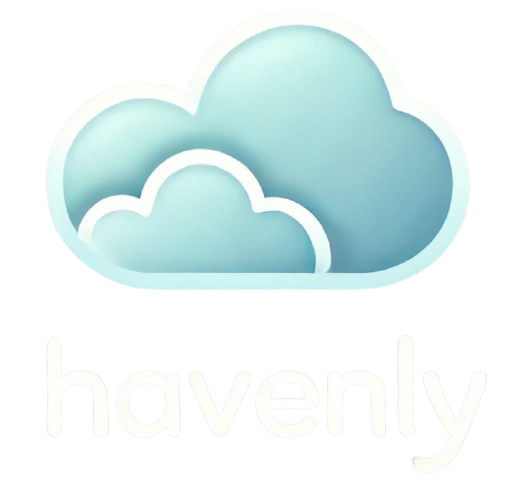

Étudiant en développement web & web mobile
Actuellement étudiant dans le domaine du développement web et web mobile, je suis à la recherche d'un stage pour la période du 12 mai au 27 juin, avec possibilité de poursuivre en alternance à partir de septembre.
De nature autonome, je peux également travailler tout aussi bien en groupe avec une grande force d'adaptabilité grâce à mon expérience aqcuise lors de mon job étudiant et des sports que j'ai pu pratiquer
passionné par l'informatique, je m'intéresse aussi beaucoup aux nouvelles technologies et à l'intelligence artificielle.
Création et intégration de sites web et applications mobiles responsive, accessibles et répondant aux normes W3C.
Application domotique – en cours
Application de réservation pour camping :
Forum web autour du cinéma et de la pop culture, réalisé en PHP Symfony
 Application de réservation de logements de type AirBnb, développée avec un framework PHP maison inspiré de Symfony
Station météo conçue en C++ avec une Raspberry Pi et des capteurs météo, envoyant les données en temps réel vers une page web.
2022 - 2024
Préparation de commandes clients dans un environnement dynamique et logistique.
Été 2022
Expériences variées en intérim dans le secteur logistique et manutention.
Je suis disponible sur Montpellier et ses alentours et également sur Perpignan et ses alentours